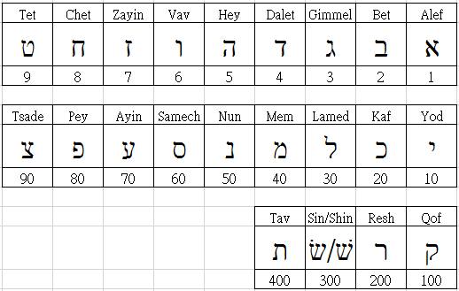
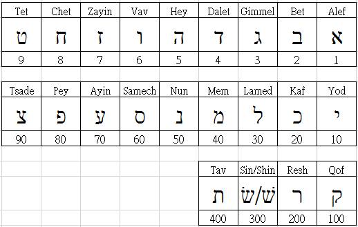
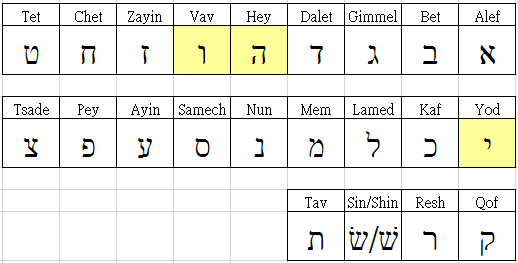

希伯來文書寫習慣，是由右至左。
希伯來文共計22個字母，主要是作為子音使用。
每個字母多有其各自的讀音。[混淆穹蒼][]

每個字母多代表一個數字值。例如 Aleph א 代表數字 1。
因著有這樣的關係，所以將22個字母，分解成 9, 9, 4 來排列，好方便學習、記憶。

曾經因為閱讀聖經中的詩篇119章，才知道詩篇這卷書卷是藉由22個希伯來文字母，並且依照其字母順序，以每個字母８小節的架構方式撰寫而成。
所以，詩篇119章就有 22 * 8 = 176 小節。
對於希伯來文的22個字母，是長得什麼模樣？這份好奇心，就此深藏心中許久。
近來，有幸在FB社群學習希伯來語-奇布茲看到一群同好在學習這種語言，也就一頭栽下，開始踏入學習希伯來文之路。
因為筆者是個初學者，加上個人自學沒上語言班補習；所以經歷地不少學習上的瓶頸與盲點，才想要將這過程的點點滴滴記錄下，以饗日後新進的初學者。
希伯來文書寫習慣，是由右至左。
希伯來文共計22個字母，主要是作為子音使用。
每個字母多有其各自的讀音。[混淆穹蒼][]
每個字母多代表一個數字值。例如 Aleph א 代表數字 1。
因著有這樣的關係，所以將22個字母，分解成 9, 9, 4 來排列，好方便學習、記憶。

PS :
:

３個母音字母 ה ו י
:

字母 ר 也有喉音表現
４個喉音字母
:

例如：道路 דרך，世界 ארץ。
希伯來文字母中，有６個字母具有兩種發音方式。這6個字母稱為 Begadkephat。 它們會以字母有沒有含點符號來表示
不含點符號的字母，以『擦音』來發音。（如英文的 v, f）

PS : 依據學習希伯來語-奇布茲的 Terence Ha 對 Begadkephat 的說明，可以更清楚明白 Begadkephat 的意義。
Begadkephat，是借用了 bet 的 b，gimmel 的 g，dalet 的 d， kaf 的 k，pey 的 ph 和 tav 的 t， 加上韻母(母音)後，b-g-d 變成 begad，k-ph-t 變成 kephat。
作者在個人部落格Blog中，常有分享希伯來文學習心得文章，讀者可多加以閱覽。
字母彙整表

混淆穹蒼
剛開始學習希伯來文時，最讓筆者混淆不清的事情，就是22個字母的英文讀音。來自網站、圖書或是社群的每種資料多少都會有些差異
柴靜中國霧霾調查：蒼穹之下
回到目錄清單頁，選讀其他章節！
回到目錄清單頁，選讀其他章節！